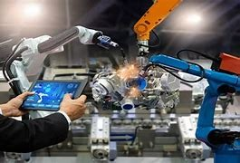
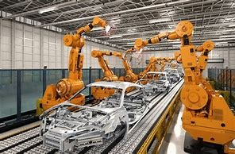
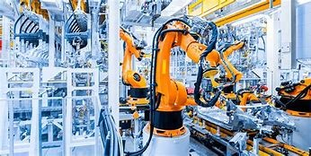
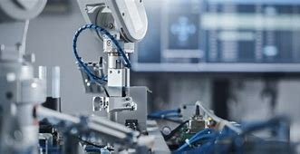
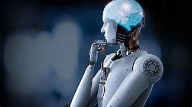

| TIPO | TIPOS DE AUTOMATIZACIÓNDESCRIPCIÓN | IMAGEN |
AUTOMATIZACIÓN DE LA TI | La automatización de TI ayuda a los responsables de TI a evitar y gestionar incidentes, proteger los sistemas y mejorar la ciberseguridad, a la vez que mantienen los bajos costes al racionalizar el uso de la fuerza de trabajo |  |
AUTOMATIZACIÓN EMPRESARIAL |
La automatización de las empresas consiste en coordinar la gestión de procesos empresariales (BPM) y la gestión de reglas comerciales (BRM) con el desarrollo de aplicaciones para satisfacer la demanda cambiante del mercado |
 |
AUTOMATIZACIÓN DE PROCESOS EMPRESARIALES | La automatización de procesos empresariales consiste en la aplicación de la tecnología para realizar tareas o procesos recurrentes en los que el esfuerzo manual puede reemplazarse |  |
AUTOMATIZACIÓN ROBOTICA DE LOS PROCESOS | La automatización robótica de procesos (RPA) es una tecnología que permite configurar un software o robot para simular y ejecutar las acciones de un humano que interactúa con sistemas digitales |  |
AUTOMATIZACIÓN INDUSTRIAL | La automatización industrial es la aplicación de las tecnologías para el control y gestión de maquinarias y procesos industriales sin la necesidad de operadores humanos |  |
INTELIGENCIA ARTIFICIAL | Es la ciencia e ingeniería de hacer máquinas inteligentes, especialmente programas informáticos inteligentes. Se relaciona con la tarea similar de usar equipos para comprender la inteligencia humana, pero la IA no tiene que ajustarse a los métodos biológicos observables. |  |